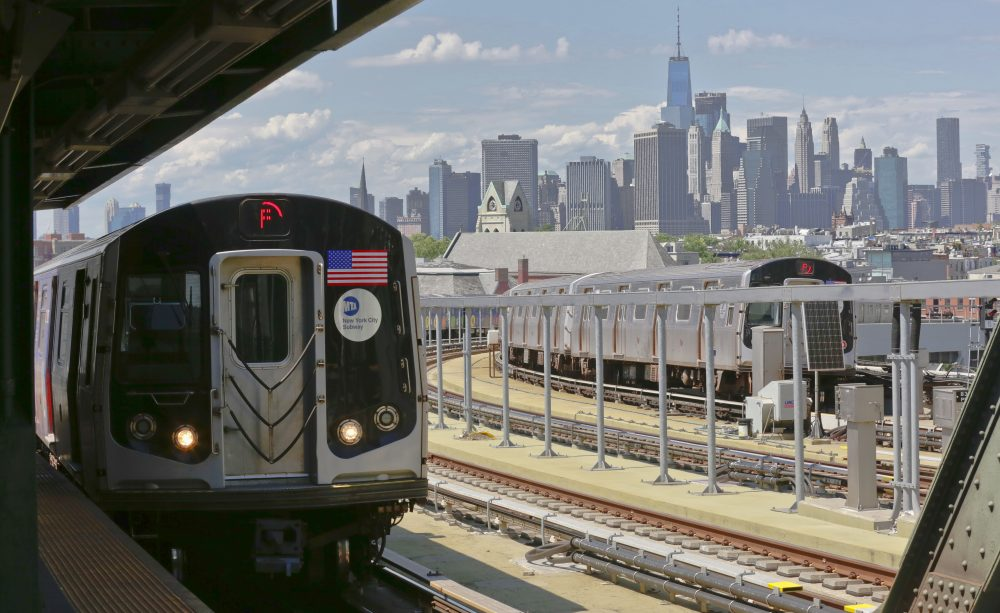
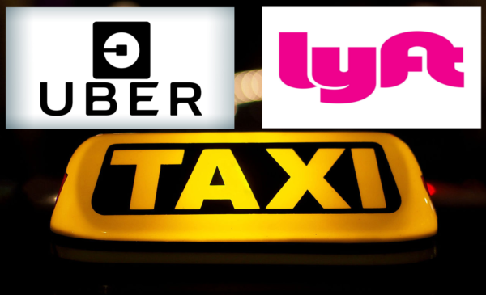
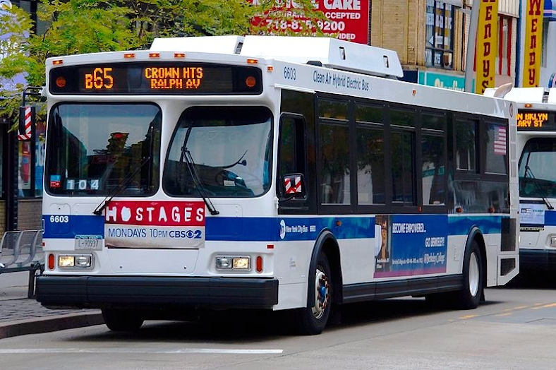
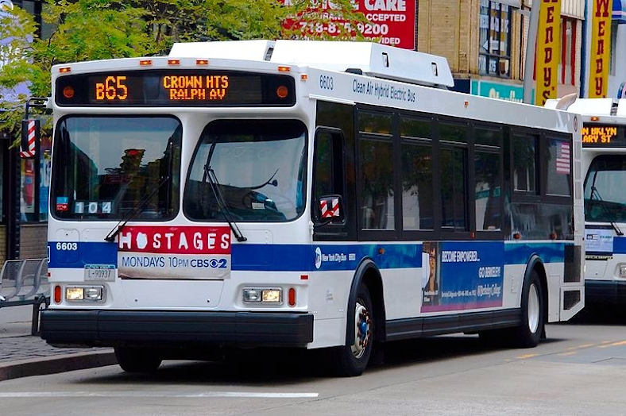

Trains

Uber-Cab-Lyft

Bus

Bus 
Fun Facts:
- 1. In case you were wondering, it is perfectly legal to walk around NYC topless.
- 2. It was one suggested that NYC be renamed Brimaquonx_a portmanteau combining all 5 borough names.
- 3. In 2011 tourists pumped about $31 billion into the cities economy.
- 4. The Fashion Institute of Technology in Manhattan is the only school in the world offering a Bachelor of Science degree w/ a major in Cosmetics & Fragrance Marketing.
- 5. NYC has 722 miles of subway track.
- 6. The term "The Big Apple" originally referred to horse racing.
- 7.More than 800 languages are spoken in New York City, making it the most linguistically diverse city in the world, 4 in 10 households speak a language other than English.
- 8. Times Square is named after the New York Times. It was originally called Longacre Square until the Times moved there in 1904.
- 9.There are about 25,000 restaurants in NYC.
- 10.We are using the term borough to refer to the different areas of New York but borough is equivalent to a county. The funny thing is that Brooklyn is in Kings County and Queens is in Queens County. So, the Kings and Queens reside side by side. No kidding!
- 11.The real Little Italy of New York City is in The Bronx (Arthur Avenue).
- 12.Brooklyn is the most populated Borough in NYC, not Manhattan!